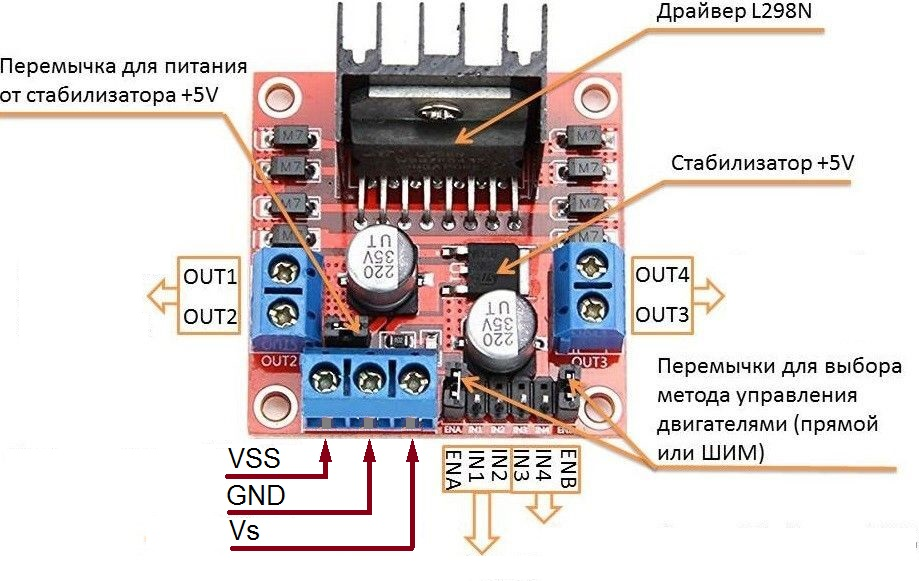
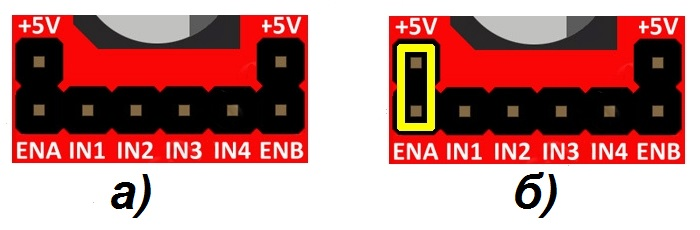
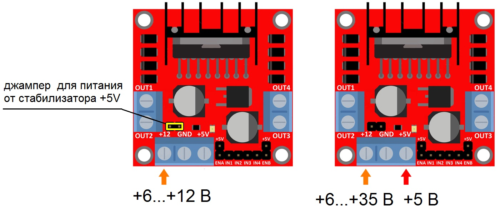
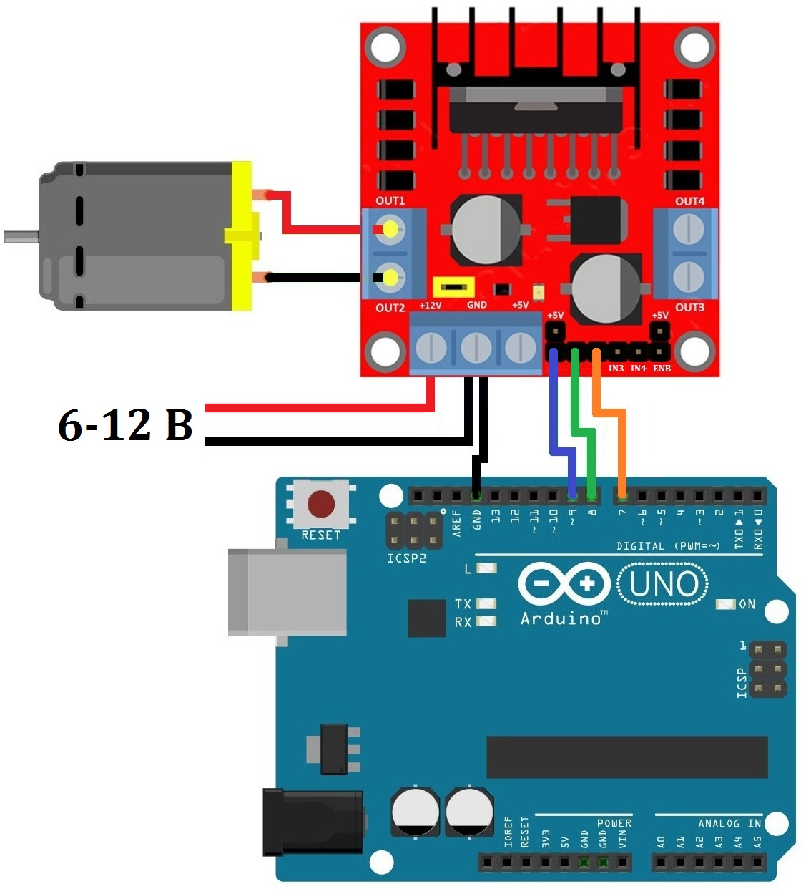

Управление электромотором с помощью драйвера L298N
Драйвер L298N используется для многофункционального управления электромоторами постоянного тока. Схема модуля состоит из двух H-мостов и позволяет подключать к нему один биполярный шаговый двигатель или одновременно два щёточных электродвигателя постоянного тока. При этом есть возможность изменять скорость и направление вращения моторов. Управление осуществляется путём подачи соответствующих сигналов на командные входы, выполненные в виде штыревых контактов. На рисунке 1 показан внешний вид модуля.

Назначение выводов:
- OUT1 и OUT2 – разъёмы для подключения первого щёточного двигателя или первой обмотки шагового двигателя;
- OUT3 и OUT4 – разъёмы для подключения второго щёточного двигателя или второй обмотки шагового двигателя;
- VSS (+12V) – вход для питания двигателей (максимальный уровень +35 В);
- GND – общий провод;
- Vs (+5V) – вход для питания логики +5 В.
- IN1, IN2 – контакты управления первым двигателем или первой обмоткой шагового двигателя.
- IN3, IN4 – контакты управления вторым двигателем или второй обмоткой шагового двигателя.
- ENA, ENB – контакты для активации/деактивации первого и второго двигателей или соответствующих обмоток шагового двигателя. Подача логической единицы на эти контакты разрешает вращение двигателей, а логический ноль – запрещает. Для изменения скорости вращения щёточных моторов на эти контакты подаётся ШИМ-сигнал. Для работы с шаговым двигателям, как правило, на эти контакты ставят перемычки, обеспечивающие постоянную подтяжку к +5 В.
Основные технические параметры драйвера L293N:
- Напряжение питания логики - 5 В.
- Потребляемый логикой ток - 36 мА.
- Напряжение питания моторов - 5 ... 35В.
- Рабочий ток драйвера - 2 А.
- Пиковый ток драйвера - 3 А.
- Максимальная мощность - 20 Вт (при температуре 75°С).
- Диапазон рабочих температур - -25°С…+135°С.
- Размеры модуля - 43,5 × 43,2 × 29,4 мм.
Основным элементом модуля является микросхема L298N, в состав которой входят два полноценных H-моста. Каждый H-мост выполнен в виде сборки из четырёх транзисторных ключей с включённой в центре нагрузкой в виде обмотки двигателя. Такой подход позволяет менять полярность в обмотке и как следствие направление вращения двигателя путём чередования пар открытых и закрытых ключей.
Выводы ENA (привязан к IN1 и IN2) и ENB (привязан к IN3 и IN4) отвечают за раздельное управление каналами. Могут использоваться в двух режимах:
- Активный режим. Управление возлагается на контроллер (рис.2,а). Высокий логический уровень разрешает вращение моторов, низкий запрещает, при этом уровни сигнала на выводах “IN” не имеет значения. Подавая на выводы “EN” ШИМ-сигнал, можно управлять скоростью вращения моторов.
- Пассивный режим. Подключение выводов “EN” к высокому уровню (+5 В). Для этого на плате с помощью джамперов замыкаем штырьки +5V и EN, как показано на рис. 2, б . В таком режиме невозможно регулировать скорость двигателей, они всегда будут работать на полной скорости. При этом освобождаются два вывода микроконтроллера. Направление вращение задаётся состоянием выводов "IN". Чтобы остановить двигатель, на парные выводы "IN1" и "IN2" ( "IN3" и "IN4")подаём сигнал одного уровня.

Питание модуля L298N осуществляется через трех контактный разъем, шагом 3,5 мм:
- VSS (+12V) — источник питания двигателей, 3...35 B.
- GND — общий.
- Vs (+5V) — источник питания модуля, 4,5...5,5 В.
Разъем "+12 V" используется для подачи питания на двигатели и одновременно на стабилизатор +5V логики драйвера. При этом должен быть установлен джампер (перемычка) для питания от стабилизатоа +5V (рис. 3, а). Маркировка "+12V" определяет максимальное входное напряжение стабилизатора. Напряжение моторов может достигать 35 В.
При напряжении питания моторов выше 12 В подаем нужное напряжение на вход "+12V". При этом снимаем джампер для питания от стабилизатоа +5V (рис. 3, б). На разъем "+5V" следует подать отдельный провод от вывода "+5V" Arduino.
,
Внимание! Нельзя установить перемычку, если напряжение двигателя выше 12 В.
При сборке схемы управления электромотором (рис. 4) сначала необходимо подключить источник питания к двигателю. Учитывая внутреннее падение напряжения на микросхеме L298N, двигатель получит на 2 В меньше, чем выходное напряжение источника питания.
Затем, нужно подключить 5 В на логическую схему L298N, для этого воспользуемся встроенным стабилизатором напряжения, который работает от источника питания двигателя, поэтому, перемычка EN должна быть установлена.
Теперь подключаем управляющие провода ENA, IN1, IN2 к цифровым выводам Arduino 9, 8, 7. Вывод 9 на Arduino поддерживает ШИМ и используется для управления скоростью вращения мотора. Подключаем электромотором к клемме A (OUT1, OUT2).

int enA = 9;
int in1 = 8;
int in2 = 7;
void setup()
{
pinMode(enA, OUTPUT);
pinMode(in1, OUTPUT);
pinMode(in2, OUTPUT);
// Отключение мотора
digitalWrite(in1, LOW);
digitalWrite(in2, LOW);
}
void loop(){
// Установка средней скорости мотора
analogWrite(enA, 125);
// Вращение мотором вперед
digitalWrite(in1, HIGH);
digitalWrite(in2, LOW);
delay(3000);// Время работы мотора
// Отключение мотора
digitalWrite(in1, LOW);
digitalWrite(in2, LOW);
delay(1000); // Время остановки мотора
// Вращение мотором назад
digitalWrite(in1, LOW);
digitalWrite(in2, HIGH);
delay(3000); // Время работы мотора
// Отключение мотора
digitalWrite(in1, LOW);
digitalWrite(in2, LOW);
delay(1000);// Время остановки мотора
}
Источники
3d-diy.ru - Драйвер двигателя L298N
robotchip.ru - Обзор драйвера мотора на L298N
robotclass.ru - Ардуино: драйвер L298N для мотора постоянного тока